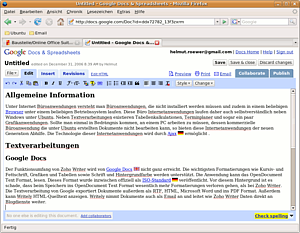
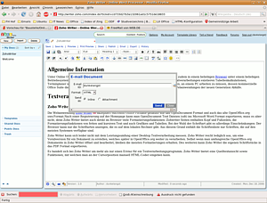
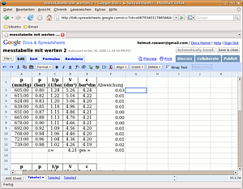
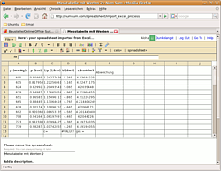
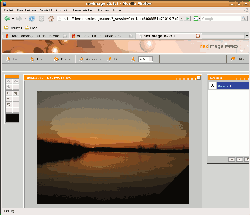

Internet-Büroanwendungen
Ausbaufähige Anleitung
Dieser Anleitung fehlen noch einige Informationen. Wenn Du etwas verbessern kannst, dann editiere den Beitrag, um die Qualität des Wikis noch weiter zu verbessern.
Anmerkung: Die hier genannten Informationen sind teilweise veraltet, insbesondere die zu Microsoft Office Live. Wer mit aktuellen Hinweisen weiterhelfen kann, meldet sich bitte in der Diskussion des Artikels.
Allgemeine Information¶
Unter internetbasierten Büroanwendungen versteht man Büroanwendungen, die nicht installiert werden müssen und zudem in einem beliebigen Browser unter einem beliebigen Betriebssystem laufen. Diese Anwendungen laufen daher auch selbstverständlich neben Windows unter allen Ubuntu-Versionen. Neben Textverarbeitungen existieren Tabellenkalkulationen, Terminplaner und sogar ein paar Grafikanwendungen. Sollte man einmal in Bedrängnis kommen, an einem PC arbeiten zu müssen, dessen kommerzielle Büroanwendung die unter Ubuntu erstellten Dokumente nicht bearbeiten kann, so bieten diese Internetanwendungen der neuen Generation Abhilfe. Die Technologie dieser Internetanwendungen wird durch Ajax ermöglicht.
Textverarbeitungen¶
Google Docs¶
Hinweis:
Vor der Benutzung der Google Docs sei ausdrücklich auf die AGB  hingewiesen: "Durch Übermittlung, Einstellung oder Darstellung der Inhalte gewähren Sie Google eine dauerhafte, unwiderrufliche, weltweite, kostenlose und nicht exklusive Lizenz zur Reproduktion, Anpassung, Modifikation, Übersetzung, Veröffentlichung, öffentlichen Wiedergabe oder öffentlichen Zugänglichmachung und Verbreitung der von Ihnen in oder durch die Services übermittelten, eingestellten oder dargestellten Inhalte."
hingewiesen: "Durch Übermittlung, Einstellung oder Darstellung der Inhalte gewähren Sie Google eine dauerhafte, unwiderrufliche, weltweite, kostenlose und nicht exklusive Lizenz zur Reproduktion, Anpassung, Modifikation, Übersetzung, Veröffentlichung, öffentlichen Wiedergabe oder öffentlichen Zugänglichmachung und Verbreitung der von Ihnen in oder durch die Services übermittelten, eingestellten oder dargestellten Inhalte."

Der Funktionsumfang von Zoho Writer (siehe unten) wird von Google Docs  nicht ganz erreicht. Die wichtigsten Formatierungen wie Kursiv- und Fettschrift, Grafiken und Tabellen sowie Schrift und Hintergrundfarbe werden unterstützt. Die Anwendung kann das OpenDocument-Textformat lesen. Dieses Format wurde inzwischen offiziell als ISO-Standard veröffentlicht. Vor diesem Hintergrund ist es schade, dass beim Speichern ins OpenDocument-Texformat wesentlich mehr Formatierungen verloren gehen als bei Zoho Writer. Die Textverarbeitung von Google exportiert Dokumente außerdem als RTF, HTML, Microsoft Word und PDF. Außerdem kann Writely HTML-Quelltext anzeigen und nimmt Dokumente auch als Email an und leitet wie Zoho Writer Daten direkt an Blogdienste weiter.
nicht ganz erreicht. Die wichtigsten Formatierungen wie Kursiv- und Fettschrift, Grafiken und Tabellen sowie Schrift und Hintergrundfarbe werden unterstützt. Die Anwendung kann das OpenDocument-Textformat lesen. Dieses Format wurde inzwischen offiziell als ISO-Standard veröffentlicht. Vor diesem Hintergrund ist es schade, dass beim Speichern ins OpenDocument-Texformat wesentlich mehr Formatierungen verloren gehen als bei Zoho Writer. Die Textverarbeitung von Google exportiert Dokumente außerdem als RTF, HTML, Microsoft Word und PDF. Außerdem kann Writely HTML-Quelltext anzeigen und nimmt Dokumente auch als Email an und leitet wie Zoho Writer Daten direkt an Blogdienste weiter.
Zoho Writer¶
Die Webanwendung Zoho Writer akzeptiert Microsoft Office-Formate genauso wie das OpenDocument-Format und auch das alte von OpenOffice.org verwendete swx-Format. Nach einer Registrierung auf der Homepage kann man OpenDocument-Textdateien (odt) ins Microsoft Word-Format exportieren, muss es aber nicht, denn Zoho Writer bietet auch direkt im Browser viele Formatierungsfunktionen: Zoho Writer-Seiten enthalten Kopf und Fußzeilen, die Formatierungsfunktionen von fettem und kursivem Text und auch Grafiken sowie Tabellen. Bei der Wahl der Schriftart gibt es allerdings Einschränkungen: Der Browser kann nur die Schriftarten anzeigen, die es auf dem lokalen Rechner gibt. Aus diesem Grund enthält die Schriftenliste nur Schriften, die auf den meisten Systemen verfügbar sind.

Zoho Writer kann sich leider nicht mit dem Leistungsumfang einer Desktop-Textverarbeitung messen. Zoho Writer reicht lediglich aus, um eine Vorabversion für ein Dokument zu erstellen, welches später mit LibreOffice weiterbearbeitet wird. Selbst wenn man umfangreiche LibreOffice-Dokumente in Zoho Writer öffnet und bearbeitet, bleiben die meisten Formatierungen erhalten. Desweiteren kann Zoho Writer die eigenen Schriftstücke in das PDF-Format exportieren.
Es handelt sich bei Zoho Writer um mehr als nur einen Ersatz für ein Textverarbeitungsprogramm. Zoho Writer bietet eine Quelltextansicht sowie Funktionen, mit welchen man an der Cursorposition manuell HTML-Coder eingeben kann.
Unter dem Menü "Email" findet man eine Adresse, unter der Zoho Writer per E-Mail Texte über das eigenen E-Mail Konto entgegen nimmt. Es lassen sich schließlich auch Dokumente für andere Nutzer freigeben, ohne dass man sich um die technische Voraussetzung kümmern muss. Es gehen keine Informationen verloren, wenn mehrere Benutzer das selbe Dokument bearbeiten und ihre Änderungen speichern. Die Versionsverwaltung stellt dies sicher.
Die Nutzungsbedingungen stellen die größte Einschränkung dar: Zoho Writer ist im Moment frei verfügbar, wohl auf Grund der Tatsache, dass es sich noch in einer Betaphase befindet. Die Entwickler behalten sich vor, die Freiheit in Zukunft einzuschränken.
Microsoft Office Live Word¶
Office - Windows Live erlaubt das Erstellen und Hochladen von Microsoft Word Dokumenten auf Microsoft SkyDrive. Man benötigt Moonlight 3.0, das als Preview Version als Firefox Plugin erhältlich ist. Dokumente können bearbeitet und freigegeben werden, jedoch nicht im vollen Funktionsumfang des Vollpreisprodukts, dass mit CrossOver oder Wine unter Linux betrieben werden kann.
LaTeX Lab¶
LaTeX Lab verwendet den Google Docs Dienst, um eine integrierte Entwicklungsumgebung für das Textsatzsystem LaTeX anzubieten. Es erlaubt auch, die Dokumente im Browser zu rendern und als PDF herunterzuladen. Benötigt wird ein Google-Zugang und ein JavaScript-fähiger Browser.
Adobe Acrobat Buzzword¶
Acrobat Buzzword verwendet Adobe Flash, um eine Textverarbeitung im Browser bereit zu stellen. Es können Word-Dokumente hochgeladen und freigegeben werden. Herausragendes Merkmal ist die Erstellung von PDFs.
Crocodoc¶
crocodoc hat sich auf die Kommentierfunktion von PDF-, Word-Dateien und Bildern spezialisiert. Insbesondere die PDF-Kommentarfunktion steht kostenlos zur Verfügung (normalerweise wird das sehr teure und nicht für Linux verfügbare Adobe Acrobat benötigt, um zu kommentieren oder die Kommentarfunktion für den kostenlosen Reader bereitzustellen). Da alles online und in Echtzeit abläuft, können auch mehrere Leute gleichzeitig ein Dokument kommentieren anstatt sich per Mail veraltete Versionen auszutauschen.
Tabellenkalkulationen¶
Google Spreadsheets¶
Hinweis:
Vor der Benutzung der Google Spreadsheets sei ausdrücklich auf die AGB hingewiesen: "Durch Übermittlung, Einstellung oder Darstellung der Inhalte gewähren Sie Google eine dauerhafte, unwiderrufliche, weltweite, kostenlose und nicht exklusive Lizenz zur Reproduktion, Anpassung, Modifikation, Übersetzung, Veröffentlichung, öffentlichen Wiedergabe oder öffentlichen Zugänglichmachung und Verbreitung der von Ihnen in oder durch die Services übermittelten, eingestellten oder dargestellten Inhalte."
 Google Spreadsheets präsentiert sich im typischen recht spartanischen Google Design, genau wie Google Writely. Diese Tabellenkalkulation sieht genauso aus wie LibreOffice Calc. Mit der Maus lassen sich wie gewohnt die Zeilen- und Spaltengröße verändern, wenn man die Maus im Randbereich über die Zeilen- und Spaltenränder bewegt. Die Zellen werden durch Drücken mit der linken Maustaste markiert. Am oberen Fensterrand findet man die drei Menüs "Format", "Sort", und "Formulars". Unter "Format" findet man die wichtigsten Formatierungsfunktionen. Man kann den Zellen übliche Zahlenformate zuweisen, wie etwa verschiedene Währungen, Datum oder Text, aber auch die Anzahl der Kommastellen.
Die Schrift kann kursiv, fett oder unterstrichen formatiert werden. Einige Schriftarten stehen ebenfalls zur Auswahl bereit. Die Schriftausrichtung sowie die Schriftgröße lassen sich genauso anpassen wie die Schrift- und Hintergrundfarbe. Selbstverständlich kann man bei Bedarf mehrere Zellen verbinden.
Dadurch, dass Google Spreadsheets ausschließlich in HTML programmiert wurde, stehen gerade einmal sechs Schrifttypen zur Auswahl. Dank Ajax muss die Seite jedoch nicht ständig neu geladen werden.
Die Rechenleistung von Google Spreadsheets ist enorm: Klickt man auf das Menü "Formulars" öffnet die Anwendung ein Dialogfeld, das die meisten aus anderen Tabellenkalkulationen bekannten Funktionen enthält. Folgende Funktionen werden u.a. angeboten: Logarithmus, Fakultät, Sinus, Formeln aus Statistik und Finanzmathematik, logische Operatoren, und Funktionen zur Datumsmanipulation.
Google Spreadsheets reagiert leider sehr träge auf Benutzereingaben.
NumSum¶
 Die Tabellenkalkulation NumSum lässt sich wesentlich flüssiger bedienen als Google Spreadsheets. Leider muss NumSum bei Berechnungen im Vergleich zu Google Spreadsheets passen. Die Benutzeroberfläche fällt weniger spartanisch aus als bei Google. Bei Funktionen, bei denen der Benutzer mehrere Parameter einstellen kann, setzt NumSum praktische Docks am oberen Ende des Arbeitsbereichs ein. Außerdem kann NumSum Daten in Diagrammen visualisieren.
Wie bereits erwähnt ist NumSum recht schwach mit Berechnungsfunktionen bestückt. Die Funktionen werden auch nicht nach Kategorie sortiert aufgelistet und auch nicht automatisch in die Felder eingefügt.
Das größte Manko ist die Lizenz: Nach Abschluss der derzeitigen Betaphase wird NumSum nur noch in einer eingeschränkten Version frei verfügbar sein. Man sollte sich daher wohl eher mit Google Spreadsheets beschäftigen.
EditGrid¶
EditGrid nutzt Gnumeric im Hintergrund und stellt mittels Java-Script eine grafische Oberfläche im Browser da. Es können zahlreiche proprietäre Formate importiert werden. Besonderes Merkmal ist die Echtzeit-Anbindung von Internetdatenquellen.
Adobe Acrobat Tables¶
Acrobat Tables verwendet Adobe Flash, um eine Tabellenkalkulation im Browser bereit zu stellen. Es können Tabellen in verschiedenen Formaten hochgeladen und freigegeben werden. Herausragendes Merkmal ist die Erstellung von PDFs.
Microsoft Office Live Excel¶
Office - Windows Live erlaubt das Erstellen und Hochladen von Microsoft Excel Tabellen auf Microsoft SkyDrive. Man benötigt Moonlight 3.0, das als Preview Version als Firefox Plugin erhältlich ist. Tabellen können bearbeitet und freigegeben werden, jedoch nicht im vollen Funktionsumfang des Vollpreisprodukts, dass mit CrossOver oder Wine unter Linux betrieben werden kann.
Präsentationen¶
Google Text und Tabellen¶
Google Docs unterstützt mittlerweile auch die Erstellung von Bildschirmpräsentationen. Es können proprietäre Formate wie Microsoft PowerPoint hochgeladen und konvertiert werden. Es werden keine Plugins benötigt.
Adobe Acrobat Presentations¶
Acrobat Presentations verwendet Adobe Flash, um eine Bildschirmpräsentation im Browser bereit zu stellen. Es können Präsentationen in verschiedenen Formaten hochgeladen und freigegeben werden. Herausragendes Merkmal ist die Erstellung von PDFs.
Microsoft Office Live PowerPoint¶
Office - Windows Live erlaubt das Erstellen und Hochladen von Microsoft PowerPoint Präsentationen auf Microsoft SkyDrive. Man benötigt Moonlight 3.0, das als Preview Version als Firefox Plugin erhältlich ist. Präsentationen können bearbeitet, online abgespielt und freigegeben werden, jedoch nicht im vollen Funktionsumfang des Vollpreisprodukts, dass mit CrossOver oder Wine unter Linux betrieben werden kann.
Grafikprogramme¶

Neximage¶
Die kommerzielle Anwendung Neximage zeigt, dass es technisch möglich ist, einen Bitmap-Editor als Webanwendung zu realisieren. Die Anwendung stellt sogar mitunter deutsche Menüs zur Verfügung. Die Online-Bildbearbeitung bietet zwar nur wenige Filtereffekte, die Grundfunktionen sind jedoch vorhanden. Das Beschneiden oder das Anpassen von Helligkeitsverläufen sind genauso gut wie die in GIMP oder Adobe Photoshop. Diese Features reichen schon einmal aus, um Bilder in eine präsentable Form zu bringen.
- Erstellt mit Inyoka
-
 2004 – 2017 ubuntuusers.de • Einige Rechte vorbehalten
2004 – 2017 ubuntuusers.de • Einige Rechte vorbehalten
Lizenz • Kontakt • Datenschutz • Impressum • Serverstatus -
Serverhousing gespendet von